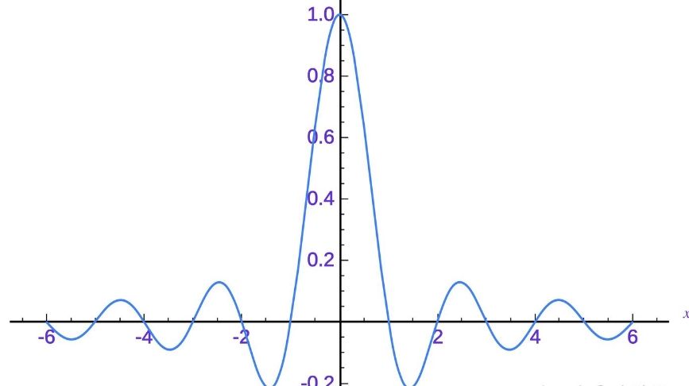

Fourier Position Embedding
Fourier Position Embedding（FOPE)出自ICML2025，对当前LLM常用的ROPE进行了改进，认为ROPE默认“每一维只存在单一频率的语义”是过于理想的，所以提出了增加更多的频率（比如基于傅里叶）的方法。
旋转位置编码
旋转式位置编码（Rotary Position Embedding，RoPE）由苏神提出，在其博客中也有介绍。
我们也可以重温一下。
我们想要一个又有绝对位置，又有相对位置的编码。苏神假定存在恒等关系：
$$
<f(q,m),f(k,n)>=g(q,k,m-n)
$$
苏神找到了以下f：$f(q,m)=qe^{im\theta}$。
动机
线性层会混杂频率：
线性层WX由于是对所有元素进行操作，自然而然会产生混杂。
激活函数会混杂频率：
作者以非线性函数和泰勒展开的角度，假设非线性函数可以展开为$\sum ax^n$。这样会有交互项，比如$(sin\theta+cos\theta)^2=1+sin2\theta$，这会引入一个新频率。
我感觉这里怪怪的
时域截断：
即由于时域截断，也会产生新的频率。
即正常的应为只在0处有值，但经过时域截断后，会变为：

怎么做
① 既然每一维中不可避免的混杂其他频率的分量，那就干脆在一开始就把每一维都建模成一个傅里叶级数（Fourier Series）。即使这样的建模不会避免频谱破坏，FoPE却可以在每一维中分解出更多频率的信息（利用三角函数的正交性），从而让更多的频率分量保持周期延拓性；
② 既然极低频的分量周期过长，会导致这些频率分量的周期特性无法被学习到，那就将他们裁剪成频率为0的直流分量。考虑到直流分量的良好性质（既可以看作周期无限短，又可以看作周期无限长），
第一点听起来有点晦涩，我们直接来看代码。
代码：https://github.com/TsinghuaC3I/Fourier-Position-Embedding
ROPE：
1 | |
FOPE：
1 | |
这里采用的是einsum，其实相当于做了个线性层变换(nn.Linear(input_dim, output_dim, bias=False)。
原作回应
ROPE作者和FOPE的作者也有讨论。苏神给出的回应是”基于https://kexue.fm/archives/9403，理论上RoPE的当前形式是完备的。“